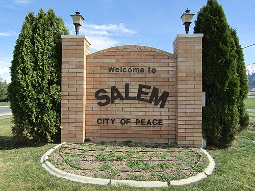

Salem Utah is a relatively small town located in southern Utah county. Salem is 10.53 square miles and has a population of 9,298. The elevation is 4,610ft. The crime rate in Salem is 80% below the national average; the violent crime rate is 94.9% lower. It offers small town benefits while still being close to various amenities. Salem boasts mountain views and provides many outdoor activities.
